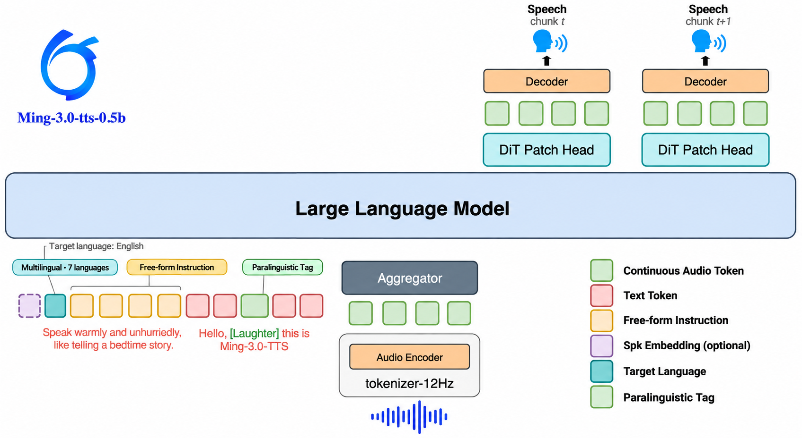
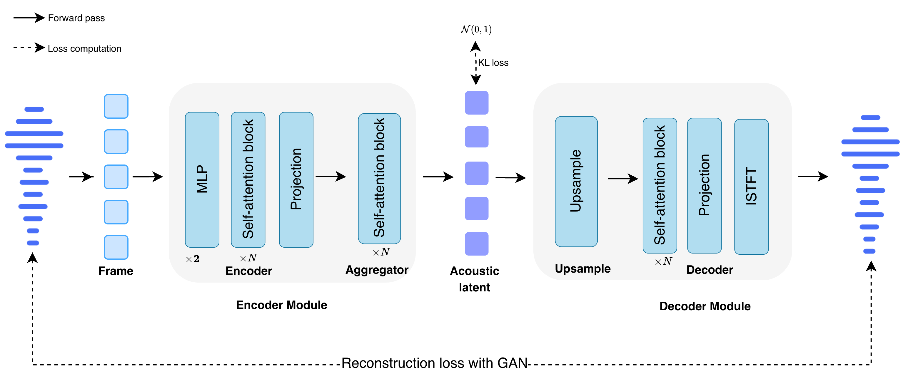

Ming-3.0-tts: Multilingual Speech Synthesis with Paralinguistic and Free-form Control
One model, many ways to shape speech.
One model, many ways to shape speech.
Getting a line of speech right is rarely just a matter of reading the words. Which voice is this character? How should the line land? Where does it pause, laugh or sigh? Is it still the same character in another language or dialect? Today those answers are scattered across tools: hunt for a reference clip that is close enough, nudge emotion and pace, splice a laugh in during post, then re-check pronunciation and timbre every time the language changes. Ming-3.0-tts puts them back into a single generation pass. Voice, delivery, non-verbal sounds, language, dialect and exact attributes are all written into the input and combined as the line needs, so what you describe is what the model performs, and what worked once can be reproduced.
Two variants share every task and control value: Ming-3.0-tts-0.5b, dense and built on Qwen2.5-0.5B, which all numbers on this page come from; and Ming-3.0-tts-tiny, an 8B-A1B mixture of experts with 1B active, built on Ling V3, whose benchmarks are to follow.
Target language, Freeform direction, paralinguistic tags and structured controls enter the model as ordinary tokens next to the text. That is why they compose with each other and with any speaker, and why adding one does not need a separate model or a second pass.

The audio tokenizer is a 12.5 Hz continuous representation carrying speech, ambient sound and music in one stream. At 12.5 tokens per second rather than the hundreds a discrete codec needs, the sequence stays short enough for a 0.5B backbone to spend its capacity on expression.
